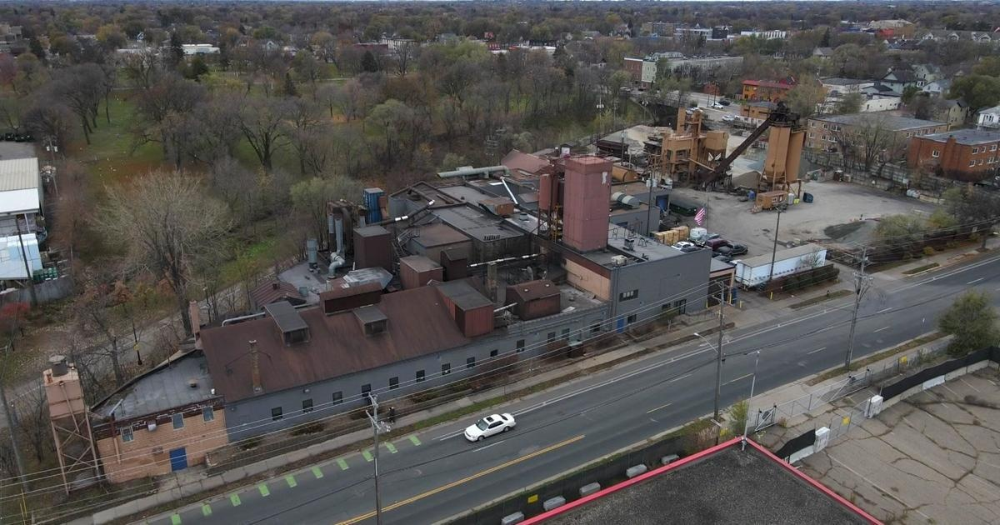

Neighbors near Minneapolis' Smith Foundry wonder why EPA's pollution discovery wasn't made by MPCAMINNEAPOLIS — Pollution violations at a Twin Cities metal factory may have harmed the community and environment. The Environmental Protection Agency (EPA) says that Smith Foundry in Minneapolis' East Phillips neighborhood released twice the amount of air emissions allowed. Families living near Smith Foundry have long complained about it, and have worried about what they're breathing in. Cassandra Holmes is a board member of the East Phillips Neighborhood Institute (EPNI). "You are always seeing like big old smoke, nasty dark smoke, whenever you come through it stinks and you're like trying to cover your nose," Holmes said. "The number one thing is the pollution and the harm it causes on our community members." MORE NEWS: During an unannounced inspection in May, the EPA says it found several violations of the Clean Air Act. An EPA letter to the foundry shows that over the last five years, the foundry reported its casting and pouring areas emitted about double the amount of particle pollution allowed. The EPA also said the foundry's lead emissions "could endanger human health or the environment." Fellow EPNI board member Steve Sandberg says he gets headaches he thinks are tied to the foundry. "To find out that they've been operating at twice their permitted level is like shocking," Sandberg said. And he worries about the health of his neighbors. "We've got a daycare center right across the street on Cedar [Avenue] there, and you know, we've got a greenway," he said. They question why the EPA discovered the pollution and not the Minnesota Pollution Control Agency (MPCA), who they've complained to for years. "They found all this stuff, and a lot of the stuff MPCA had access to and apparently couldn't, you know, or didn't whatever, you know," Sandberg said. MORE NEWS: "For me personally, I felt like do you guys not care?" Holmes said. The MPCA told WCCO that the EPA requested additional information beyond what is required to be submitted to the MPCA. The community says they deserve better. "This needs to be taken seriously, this needs to be held accountable, they need to be held accountable," Holmes said. A new owner bought Smith Foundry last December. In a statement released to WCCO late Friday afternoon, a spokesperson said the foundry "is committed to clean air for neighbors … and has been actively working with regulators to address and correct any issues." The MPCA said an inspection on Monday found pollution control equipment was operating. It plans to schedule a community meeting and increase air monitoring. for more features. |
 |